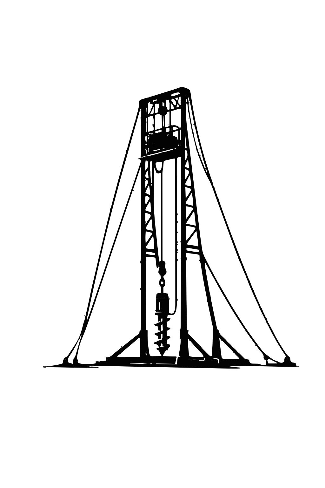
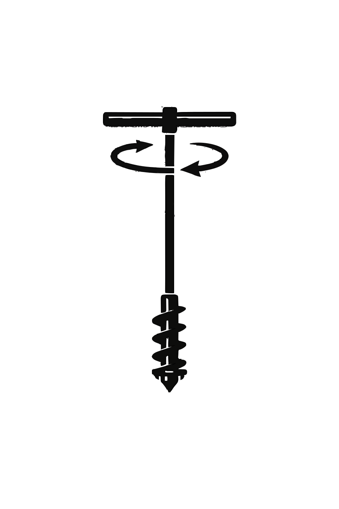
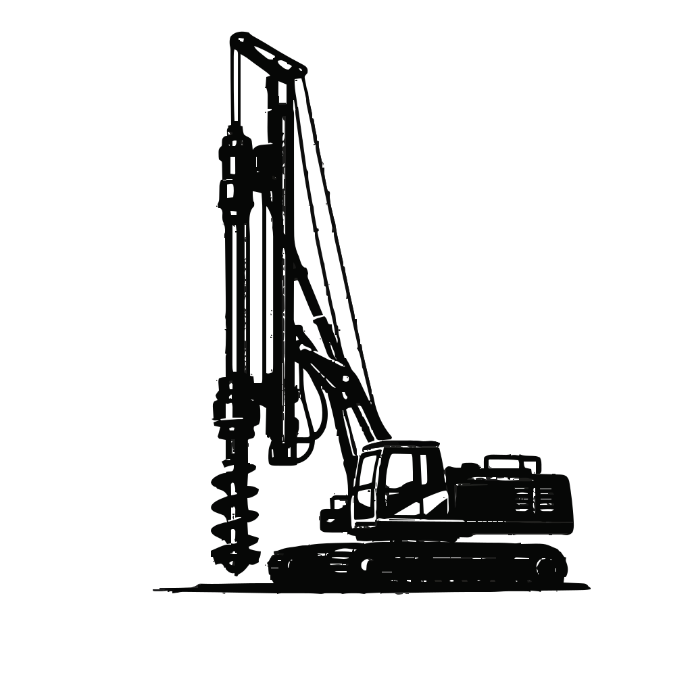

Borepile vs Strauss Pile
Perbandingan lengkap agar Anda dapat memilih jenis pondasi terbaik.

Harga jasa bore pile Bekasi 2026 untuk jasa pengeboran saja mulai dari Rp120.000/m untuk mesin (mini crane), dan manual atau strauss pile mulai dari Rp70.000/m. Lihat daftar harga bore pile 2026 lengkap di sini. Kalkulator di bawah bisa menghitung estimasi total biaya proyek Anda, tinggal melengkapi sesuai proyek anda dan akan keluar hasilnya secara otomatis. Melayani seluruh Bekasi Barat, Timur, Selatan, Utara, Cikarang, Tambun, dan sekitarnya.
Estimasi Total Biaya JASA BOR
Berikut harga JASA PENGEBORAN SAJA (belum termasuk material beton & besi) untuk wilayah Bekasi dan sekitarnya. Kedalaman pengeboran bergantung pada diameter dan kondisi lapisan tanah, di lapangan kami pernah tembus hingga kedalaman 25-30meter (mini crane), pastikan cek sondir tanah dahulu agar mengetahui kedalaman yang tepat untuk pengeboran hingga mencapai tanah keras.
| Diameter | Harga (Rp/m) | Kedalaman Maks | Cocok Untuk |
|---|---|---|---|
| 30 cm | 120.000 | 30 meter | Rumah 1-2 lantai |
| 40 cm | 135.000 | 30 meter | Ruko, kantor |
| 50 cm | 190.000 | 30 meter | Gudang, pabrik kecil |
| 60 cm | Hubungi Kami | 30 meter | Hotel 3-4 lantai |
| 80 cm | Hubungi Kami | 30 meter | Gedung 5-8 lantai |
| Diameter | Harga (Rp/m) | Kedalaman Maks | Cocok Untuk |
|---|---|---|---|
| 20 cm | 70.000 | 10 meter | Area sangat sempit |
| 25 cm | 75.000 | 10 meter | Gang kecil |
| 30 cm | 80.000 | 10 meter | Rumah, ruko 1-2 lantai (tanah padat) |
| 40 cm | 100.000 | 10 meter | Rumah, ruko 2 lantai (tanah padat) |
| Diameter | Harga (Rp/m) | Kedalaman Maks | Cocok Untuk |
|---|---|---|---|
| 40-110 cm | Hubungi Kami | 20-27 meter | Proyek skala menengah |

Harga bore pile Bekasi tidak sama untuk setiap proyek. Berikut 6 faktor utama yang menyebabkan perbedaan biaya jasa bore pile di Bekasi:
Semakin besar diameter (30cm, 40cm, 50cm, dst) dan semakin dalam pengeboran yang diperlukan hingga tanah keras di wilayah Bekasi (kedalaman bervariasi antara 8-25 meter tergantung lokasi), maka biaya per meter semakin tinggi.
Tanah di Bekasi bervariasi. Bekasi Utara dan kawasan Cikarang cenderung lunak (bekas rawa dan timbunan) membutuhkan pengeboran lebih dalam. Sementara Bekasi Selatan relatif lebih padat. Kondisi ini mempengaruhi biaya bore pile di Bekasi.
Biaya mobilisasi alat disesuaikan dengan jarak dari gudang kami di Jakarta Utara. Proyek di Bekasi Kota lebih dekat (Rp2-3jt), sementara ke Cikarang atau Tambun membutuhkan biaya lebih besar (Rp3-4jt) karena jarak tempuh lebih jauh.
Minimal order jasa bore pile Bekasi untuk mesin (mini crane & gawangan) adalah 200 meter, sedangkan strauss pile manual 100 meter, mesin hidrolik 1100 meter. Untuk volume di bawah itu, silakan hubungi admin kami untuk penawaran harga khusus.
Proyek di kawasan industri Cikarang atau Tambun biasanya memiliki akses lebih luas, sementara proyek di perumahan padat Bekasi Kota memiliki akses terbatas. Tingkat kesulitan ini mempengaruhi biaya pengerjaan bore pile Bekasi.
Proyek rumah tinggal pribadi di Bekasi umumnya lebih terjangkau, sementara proyek pabrik di kawasan industri Cikarang, gudang di Tambun, atau proyek kontraktor besar memiliki spesifikasi dan biaya yang berbeda.
💡 Tips untuk proyek bore pile di Bekasi: Untuk mendapatkan harga terbaik, lakukan pengecekan data sondir tanah Bekasi terlebih dahulu agar kedalaman pengeboran bisa ditentukan secara tepat. Perhatikan perbedaan karakteristik tanah antara Bekasi Utara (cenderung lunak) dan Bekasi Selatan (lebih padat). Konsultasikan proyek bore pile Bekasi Anda dengan tim teknis kami untuk penawaran yang sesuai.
Mesin mini crane: Rp2-4jt (tergantung lokasi) | Mesin hidrolik (Sany): 12-15jt | Strauss pile (bore pile manual): Rp1-1.5jt
Mesin mini crane dan gawangan: 200 meter | Mesin Hidrolik: 1100 meter | Strauss Pile (Manual): 100 meter, di bawah itu bisa hubungi kami
Jika memakai bore pile mesin gawangan dan mini crane menggunakan metode wash boring (bor basah), perkiraan biaya tambahannya sekitar: Rp800.000 - Rp1.200.000/rit (tergantung volume)
Sangat wajib untuk menentukan kedalaman pengeboran yang tepat hingga mencapai tanah keras di Bekasi


Spesifikasi: Bore pile mesin mini crane Ø30cm, kedalaman 12m, 16 titik
Metode: Dry Boring (Bor kering)
Biaya jasa: 12m × Rp120.000 × 16 = Rp23.040.000
+ mobilisasi: Rp3.000.000
Total: Rp26.040.000
Waktu: 5-7 hari kerja

Spesifikasi: Strauss pile (bore pile manual) Ø30cm, kedalaman 6m, 12 titik
Biaya jasa: 6m × Rp80.000 × 12 = Rp5.760.000
+ mobilisasi: Rp1.500.000
Total: Rp7.260.000
Waktu: 3-5 hari kerja

Spesifikasi: Bore pile mesin Ø40cm, kedalaman 15m, 24 titik
Metode: Wash Boring (Bor basah)
Biaya jasa: 15m × Rp135.000 × 24 = Rp48.600.000
+ mobilisasi: Rp4.000.000
Total: Rp52.600.000
Waktu: 8-10 hari kerja
📌 Note: Harga di atas sudah termasuk jasa pengeboran, perakitan besi tulangan, dan pengecoran beton, belum termasuk material (beton dan besi). Contoh di atas adalah proyek asli yang pernah kami kerjakan di lapangan. Kecepatan pengerjaan dipengaruhi oleh kondisi lapangan, akses lokasi, karakteristik tanah, dan yang paling penting adalah pasokan air yang cukup untuk metode wash boring.
Butuh harga khusus untuk diameter 30cm? Lihat detail harga bore pile diameter 30cm →
Bekasi memiliki karakteristik tanah yang bervariasi, mulai dari tanah lunak di Bekasi Utara dan kawasan Cikarang (bekas rawa) hingga tanah lebih padat di Bekasi Selatan. Metode bore pile menjadi solusi pondasi paling tepat karena:
Portofolio kami di Bekasi: Kami telah mengerjakan berbagai proyek di kawasan industri Cikarang, Tambun, serta perumahan di Bekasi Barat, Bekasi Timur, Grand Wisata, Kemang Pratama, Harapan Indah, dan Pondok Gede.
Ini alasan kenapa banyak orang Bekasi percaya sama Agung Perkasa.
Kami memakai alat bor yang baik dan terawat, seperti mini crane, gawangan, strauss pile, dan mesin Hidrolik Rotary Drilling (Sany).
Kami mengusahakan kecepatan pengerjaan dan tetap menjaga kualitas jasa yang kami berikan karena didukung tim yang sudah ahli dalam bidang pondasi dalam, khususnya bore pile di Bekasi. Kecuali ada kendala teknis di luar kendali.
Memiliki tim ahli dalam pengerjaan bore pile di Bekasi, khususnya untuk proyek di kawasan industri dan perumahan.
Lebih dari sepuluh tahun mengerjakan proyek di Bekasi. Mulai dari proyek rumah tinggal pribadi hingga proyek pabrik di kawasan industri.
Kami memiliki beberapa alat untuk pekerjaan bore pile, antara lain:
Kapasitas sedang, untuk diameter 30-50 cm, kedalaman sampai 30m meter. Mini Crane cocok untuk lokasi yang cukup luas dan membutuhkan akses yang baik untuk mobilisasi alat dan pengerjaan. Cocok untuk membuat rumah, ruko, gudang, dan bangunan bertingkat di Bekasi.
Agung Perkasa
Gawangan cocok untuk area yang tidak bisa diakses oleh mini crane. Karena ukuran dan bentuknya yang tidak sebesar mini crane, gawangan cocok untuk area yang memiliki akses terbatas (tidak muat jika mini crane lewat). Ukuran 20-40 cm, paling sering digunakan untuk membuat rumah, ruko, dan bangunan 1-2 lantai lainnya di gang sempit Bekasi.
Agung Perkasa
Alat bor manual full menggunakan tenaga manusia dalam proses pengeboran (diputar oleh tukang bore pile), memakai metode dry boring (bor kering). Cocok untuk lokasi seperti di gang sempit dan area terbatas lainnya yang tidak bisa dijangkau mini crane dan gawangan, karena mobilisasi yang lebih fleksibel (bisa menggunakan motor).
Agung Perkasa
Untuk proyek sedang hingga besar seperti hotel, gedung, pabrik, dan bangunan bertingkat lainnya. Diameter 60-120 cm, mampu menjangkau kedalaman hingga 60 meter (tergantung pada kondisi tanah).
Agung PerkasaKami melayani seluruh kecamatan di bawah ini. Proyek siap kami kerjakan.
Sangat cocok. Bekasi memiliki area dengan tanah lunak (terutama di sekitar Bekasi Utara dan kawasan Cikarang). Bore pile bisa mencapai tanah keras di kedalaman 10-20 meter, memberikan pondasi yang stabil untuk bangunan Anda.
Untuk 16 titik diameter 30cm kedalaman 12m, estimasi 5-7 hari kerja. Kalkulator di atas bisa memberi estimasi lebih akurat.
Ya. Mini crane kami bisa masuk area perumahan padat dengan getaran minimal, aman untuk bangunan sekitar.
Mesin sekitar Rp2-4 juta, manual Rp1-1.5 juta tergantung lokasi proyek (berdasarkan jarak dari gudang kami di Jakarta Utara).
Sangat wajib. Data sondir menentukan kedalaman bore pile yang tepat sesuai kondisi tanah Bekasi yang bervariasi antara area utara (lunak) dan selatan (lebih padat).
Bisa. Harga di atas untuk jasa pengeboran saja (sudah termasuk perakitan besi & pengecoran beton). Kami terima material dari klien dengan spesifikasi SNI.
Insight pondasi dan konstruksi untuk membantu keputusan proyek Anda.
 Perbandingan
Perbandingan
Perbandingan lengkap agar Anda dapat memilih jenis pondasi terbaik.
 Harga
Harga
Lihat harga terbaru 2026 untuk bore pile diameter 30cm.
 Harga
Harga
Informasi terkini tentang harga bore pile di wilayah Jakarta untuk tahun 2026.
Konsultasi gratis. Dapatkan penawaran resmi dari tim teknis kami.
Konsultasi Gratis via WABaca Juga Harga Bore Pile:
Jakarta |
Tangerang |
Depok |
Bogor
Jl. Sunter Muara II, RT.17/RW.05, Sunter Agung, Kec. Tj. Priok,
Jakarta Utara, DKI Jakarta | kode pos 14350
Spesialis pondasi borepile dengan pengalaman lebih dari 10 tahun di Bekasi dan sekitarnya.